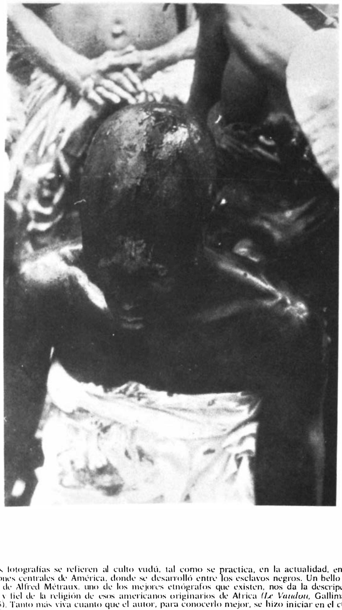

Lágrimas de Eros · Obra 120 de 124
Sacrificio vudú
Fotógrafo sin nombrar

Fotografías de una ceremonia vudú con sacrificio de aves. Bataille las atribuye, sin decir su nombre, a «uno de los fotógrafos más notables y reconocidos de hoy». Presenta el sacrificio como un éxtasis cercano a la embriaguez y, para la religión vudú, remite al libro de Alfred Métraux, «uno de los mejores etnógrafos de nuestro tiempo», que se inició en ella para conocerla mejor.
Lo que hace que destaque
Fotografías de una ceremonia vudú con sacrificio de aves. Bataille las atribuye, sin decir su nombre, a «uno de los fotógrafos más notables y reconocidos de hoy». Presenta el sacrificio como un éxtasis cercano a la embriaguez y, para la religión vudú, remite al libro de Alfred Métraux, «uno de los mejores etnógrafos de nuestro tiempo», que se inició en ella para conocerla mejor.
Contexto histórico
No se ha podido identificar al fotógrafo con fuentes. Se atribuyen a Pierre Verger, que estuvo en Haití en 1949 (Wikipedia, no citable), pero no se ha encontrado quién confirme la autoría de estas fotos. Bataille cita el libro como «Le Vaudoo, Gallimard, Paris, 1955»; el libro de Métraux es «Le Vaudou haïtien» (Gallimard, 1958): cotejarlo con la edición francesa.
Autoría y procedencia
Fotógrafo no identificado que documentó ceremonias del culto vudú en Haití a mediados del siglo XX, citado con admiración por Georges Bataille en Las lágrimas de Eros.
En los libros
Las lágrimas de Eros, de Georges Bataille · Lámina de la p. 199
«No añadiré nada a estas fotografías tan bellas, que debemos a uno de los fotógrafos más notables y reconocidos de hoy, salvo que mirarlas con pasión es entrar en un mundo tan lejano del nuestro como sea posible.»I will add nothing to these very beautiful photographs, which we owe to one of today's most remarkable and renowned photographers, except to say that to look at them with passion is to penetrate a world as far away as possible from our own.Georges Bataille, «Las lágrimas de Eros» (1961), traducido al español de la ed. inglesa de City Lights (1989), p. 199
Ficha pendiente de contrastar con fuentes académicas.